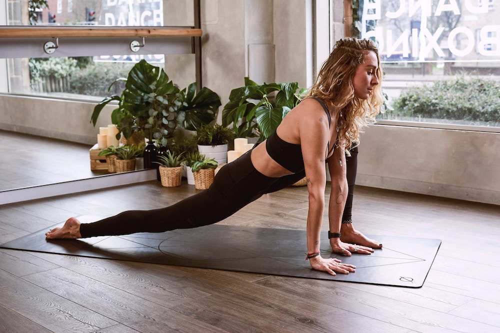
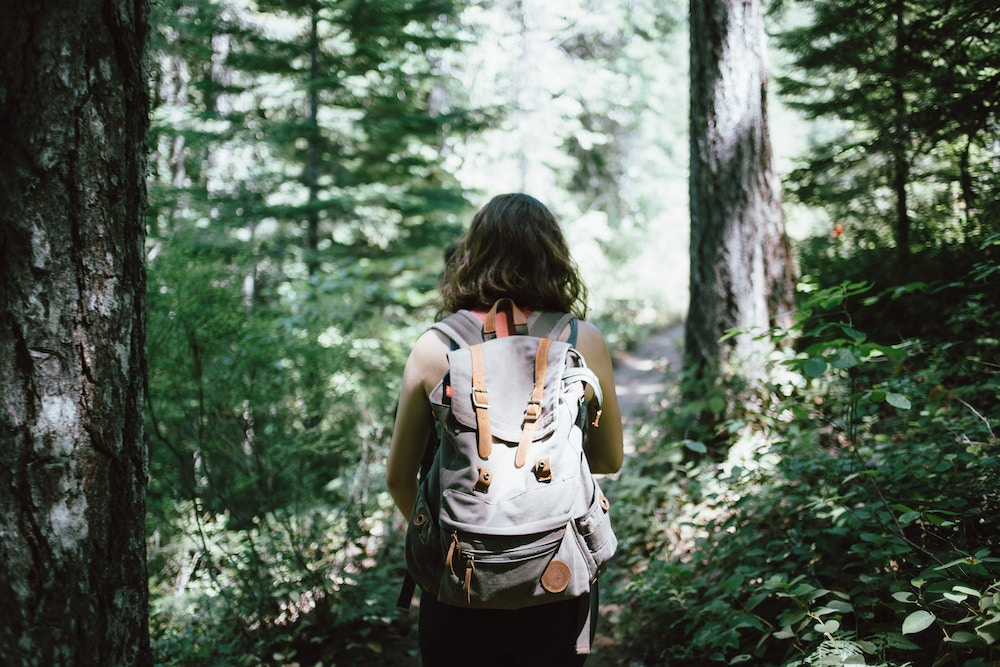
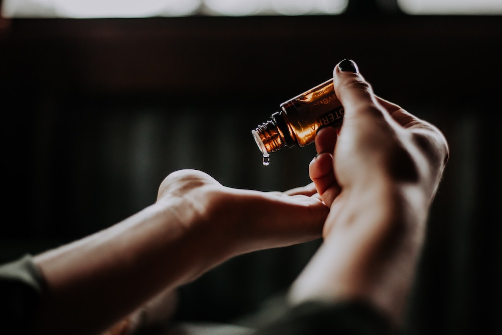

Yoga
I am a 200hr Yoga Alliance Registered Yoga Teacher! I enjoy practicing and teaching mindful movement yoga.
Books
I have always enjoyed reading from a very young age. I enjoy reading non-fiction as well as fiction in genres such as thriller, mystery, generational stories, and non-linear timelines.
Nature
I love to be outside, especially in the warmer months, to camp or go for a hike with my partner Josh and our dog Cleo.
Essential Oils
I like to create different diffuser scents, homemade face & body skincare, and even cleaning products with essential oils.
